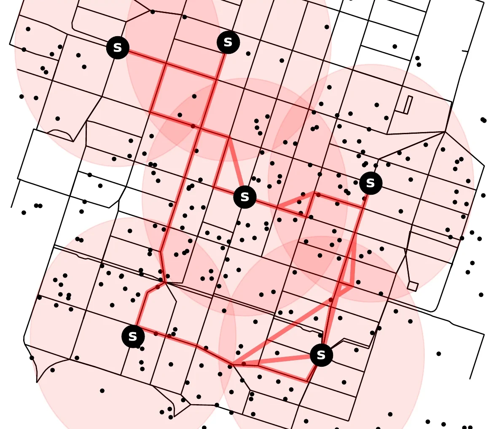
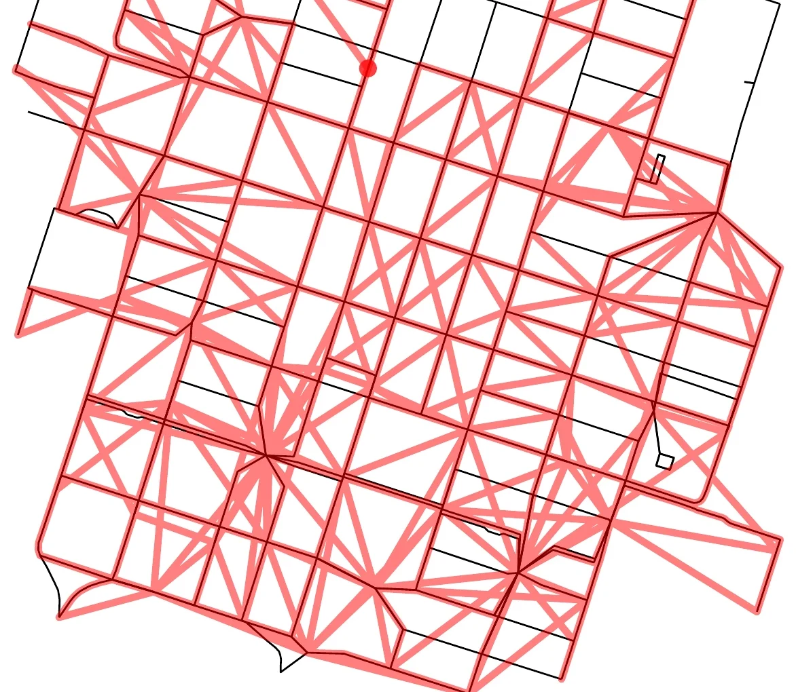
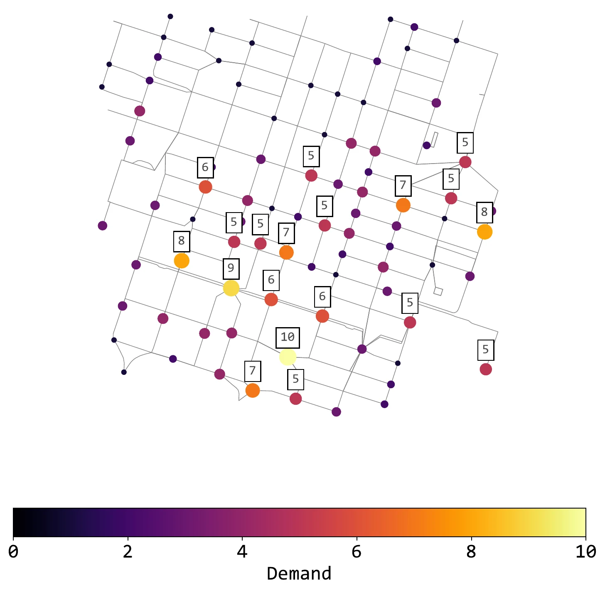
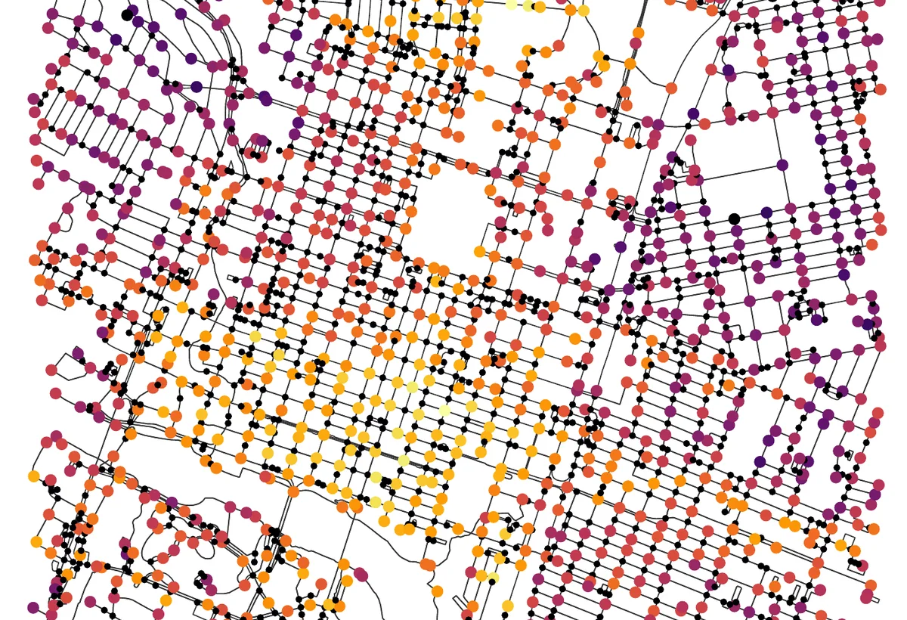
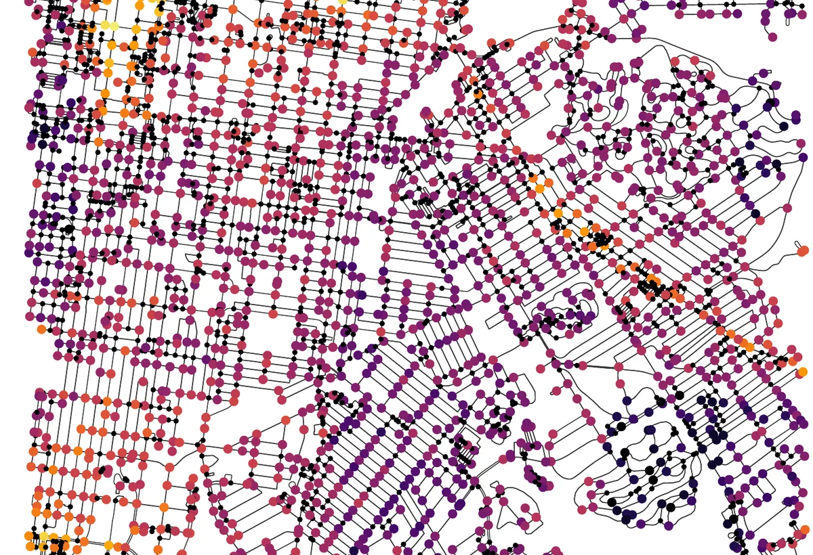

Model the city
Combine the road network with observed parking and charging demand.
Transportation Research Part E · Volume 194 · 2025
A deep reinforcement-learning framework turns observed urban demand into budget-feasible plans for parking, charging and battery-swapping facilities.
The infrastructure problem
Without designated facilities, vehicles can obstruct public space and create long collection routes. Geo-fenced parking, charging and battery-swapping locations can improve order and accessibility, but cities must decide where to build, which facility type to choose and how much to invest.
The Austin shift
In a one-square-kilometre Austin example, 263 vehicles are scattered across the street network. Restricting drop-offs to six strategically placed stations preserves convenient access while dramatically reducing the route required for collection and charging.


Planning framework
Combine the road network with observed parking and charging demand.
Balance service coverage and convenience against capacity, cost and repositioning effort.
A Double Deep Q-Network creates, extends or relocates facilities.
Evaluate candidate plans across budgets and local policy priorities.
Inside the agent
The agent observes demand, then chooses actions that create or move facilities. The decision rule can focus on the largest uncovered demand or on the area reached by a new facility.

Real-world evaluation
Austin's demand is broad and heterogeneous; Louisville's is more centralized. Training on each city's own trips and road network produces locally tailored infrastructure strategies instead of transferring a single placement recipe.

Distributed demand with dense central and southern hotspots.

More centralized demand across a larger road graph.
Planning trade-offs
Across six budgets, additional facilities generally improve coverage and shorten users' distance to the nearest facility. At the same time, a wider infrastructure network can increase collection and redistribution effort. Returns diminish once high-demand areas are saturated.
Configurable utility
Resources
Citation
Julian Teusch, Bruno Neumann Saavedra, Yannick Oskar Scherr, and Jörg P. Müller. Strategic planning of geo-fenced micro-mobility facilities using reinforcement learning. Transportation Research Part E: Logistics and Transportation Review, 194, 103872, 2025. DOI: 10.1016/j.tre.2024.103872.